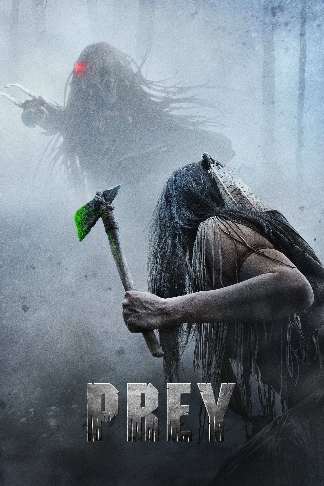
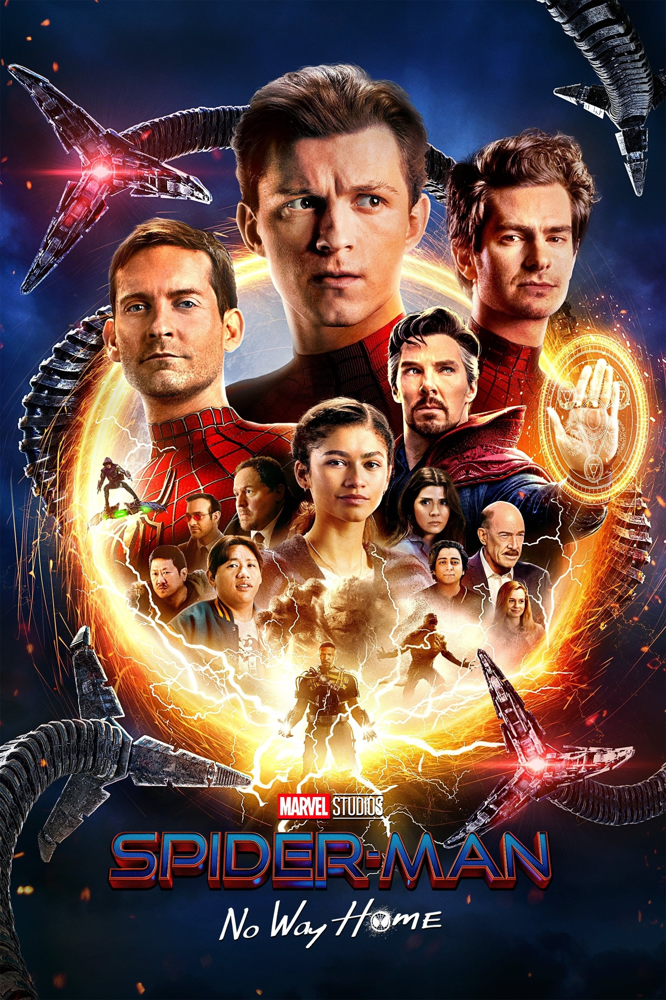

RED
PG
03/10/2022 (CZ)
Animación, Familia, Comedia, Fantasía
(1h 40m)
Puntuacion
Descripcion
Mei Lee es una niña china-canadiense de trece años que se debate entre ser la hija obediente de su madre y el caos de la adolescencia. Y, por si los cambios en sus intereses, relaciones y cuerpo no fueran suficientes, cada vez que se emociona o estresa demasiado, se convierte en un panda rojo gigante.
Ver Trailer
Mas Detalles

PREY
R
08/05/2022 (US)
Suspense, Acción
(1h 40m)
Puntuacion
Descripcion
La historia no contada de una joven de la Nación Comanche, Naru: una guerrera feroz y altamente hábil, criada entre algunos de los mejores cazadores que vagaban por las Grandes Llanuras a principios de 1700. Confiada en que es tan capaz como los otros jóvenes cazadores, se dispone a proteger a su pueblo cuando el peligro amenaza a su campamento comanche.
Ver Trailer
Mas Detalles
Lightyear
PG-13
06/16/2022 (AR)
Animación, Ciencia ficción, Aventura, Acción, Familia
(1h 45m)
Puntuacion
Descripcion
Luego de un incidente en el que queda abandonado en un planeta hostil a 4.2 millones de años luz de la Tierra junto a su comandante y tripulación, Buzz intenta encontrar el camino de regreso a casa a través del espacio y el tiempo. Pero la misión se ve amenazada con la llegada de Zurg y su ejército de robots despiadados.
Ver Trailer
Mas Detalles

Spider-Man: No Way Home
PG-13
12/15/2021 (AR)
Acción, Aventura, Ciencia ficción
(2h 28m)
Puntuacion
Descripcion
Peter Parker es desenmascarado y ya no puede separar su vida normal de los altos riesgos de ser un súper héroe. Cuando pide ayuda al Doctor Strange para recuperar su secreto, el hechizo crea un agujero en su mundo, liberando a los villanos más poderosos que han luchado con cualquier Spider-Man, en cualquier universo. Ahora Peter debe de superar su reto más grande, forzándolo a descubrir lo que realmente significa ser Spider-Man.
Ver Trailer
Mas Detalles

Minions: The Rise of Gru
PG
07/01/2022 (US)
Animación, Aventura, Comedia, Fantasía
(1h 27m)
Puntuacion
Descripcion
Mucho antes de convertirse en un genio del mal, Gru no era más que un niño de 12 años en plenos años 70 tratando de conquistar el mundo desde el sótano de su casa. Pero cuando Gru se cruza en su camino con Kevin, Stuart, Bob, y Otto .Esta inesperada familia unirá fuerzas para construir su primera guarida, diseñar sus primeras armas y llevar a cabo sus primeras misiones.
Ver Trailer
Mas Detalles